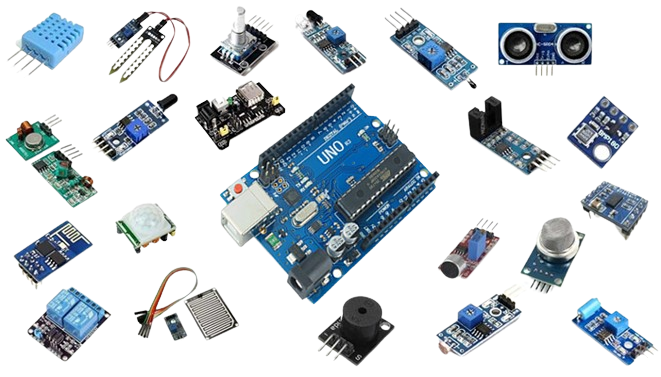

Os sensores analógicos do Arduino são dispositivos que medem grandezas físicas e convertem essas medidas em sinais elétricos variáveis. Eles fornecem uma gama de valores contínuos em oposição aos sensores digitais que dão apenas valores discretos. Exemplos comuns incluem sensores de luz, temperatura e umidade. No Arduino, esses sensores são conectados a pinos analógicos e podem ser lidos utilizando funções específicas na linguagem de programação. Eles são amplamente empregados em projetos de automação, monitoramento ambiental e dispositivos de controle baseados em feedback contínuo. Sua versatilidade e precisão os tornam essenciais em uma variedade de aplicações de eletrônica e IoT.
